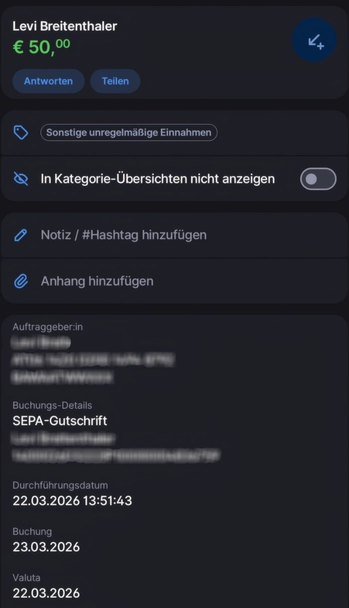
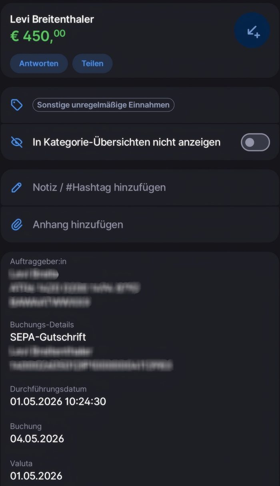
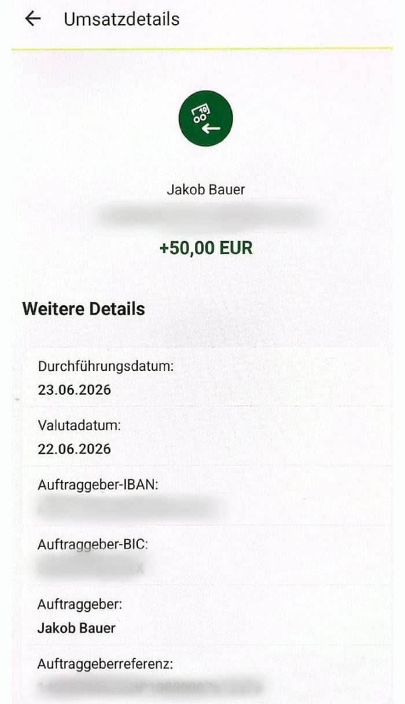
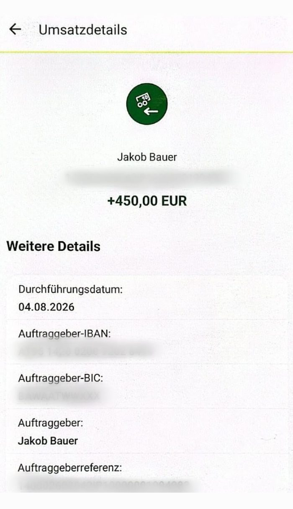

500 € — und du zahlst keinen Cent ein.
Kein Einsatz. Kein Risiko. Keine Vorkenntnisse. Du wirst Teil einer Tippgemeinschaft — die Einsätze kommen von einem Wettexperten, nicht von dir.
Trustpilot — 4,8 von 5 bei über 2.300 BewertungenKostenlos · Du zahlst nichts ein · Öffnet die WhatsApp-Gruppe
über 20.000 Teilnehmer
1.767.260 € bereits an Mitspieler ausgezahlt
Kurz: Woher kommen die 500 €?
Wettanbieter zahlen viel Geld für neue Kunden — ihr Werkzeug dafür ist der Neukundenbonus. In einer Tippgemeinschaft wird auf alle Ausgänge eines Spiels gleichzeitig gesetzt: Egal, wer gewinnt, der Bonus bleibt im System. Aus Glücksspiel wird Rechnen. Dein Anteil an dem, was dabei übrig bleibt: rund 500 €.
Den ganzen Ablauf erklären wir hier von vorne bis hinten:
Das Kapital dafür stellt ein Wettexperte. Nicht du. Deshalb kannst du auch nichts verlieren.
Was du dafür tust
-
1
Anmelden
2 Minuten
Du registrierst dich kostenlos in der Mitspieler-App oder im Web. Keine Zahlungsdaten, keine Kaution.
-
2
Vorgaben erledigen
rund 55 Minuten insgesamt
Die App führt dich Schritt für Schritt durch alles. Du entscheidest mit, wie getippt wird. Vorkenntnisse brauchst du keine.
-
3
Geld bekommen
erste 50 € innerhalb der ersten Woche
Der komplette Betrag ist nach rund 30 Tagen bei dir. Nicht sofort — der Gewinn muss erst erspielt werden.
Wir haben jeden einzelnen Schritt aufgeschrieben
Bevor du irgendetwas machst: Lies dir in Ruhe durch, wie der komplette Ablauf aussieht. Jeder Schritt, jedes Formular, jede Wartezeit — offen dokumentiert.
Wenn danach noch Fragen offen sind, bist du in der Gruppe richtig.
Prüf es nach, statt es uns zu glauben




Was andere sagen
„Hat alles wie versprochen geklappt. Danke euch. Einfach genial euer Konzept.“
„Etwas gedauert, bis alles erledigt war bei der Anmeldung. Letztendlich ist alles prima gelaufen.“
„Bin sehr zu Frieden mit robethood auch gut aufgehoben! Sehr nette Menschen“
Alle drei nachlesbar bei Trustpilot
Und was du selbst nachprüfen kannst
Sechs Stellen, an denen du das hier gegenlesen kannst — ohne uns zu fragen.
-
Trustpilot
Öffentliches Bewertungsprofil. Auch die schlechten Bewertungen stehen dort.
-
App Store und Google Play
Die Mitspieler-App ist in beiden Stores gelistet — mit Bewertungen, die du dort ungefiltert liest.
-
Gemeinsame Glücksspielbehörde der Länder
Es werden ausschließlich Wettanbieter von der offiziellen Whitelist der Behörde verwendet.
-
Unabhängige Anwaltskanzleien
Verträge und Abläufe werden regelmäßig geprüft. Die Berichte liegen offen.
-
SCHUFA
Kein Einfluss auf deinen Score. Sagt nicht Robethood — sagt die SCHUFA selbst.
-
Handelsregister
Echte Firma, echte Adresse: APS Swiss GmbH, Zürcherstrasse 16b, CH-8852 Altendorf.
Was du dich wahrscheinlich gerade fragst
Ist das legal?
Ja. Tippgemeinschaften sind im deutschsprachigen Raum völlig normal — du kennst das Prinzip von der Lotto-Runde im Büro. Es wird ausschließlich bei Wettanbietern gespielt, die auf der offiziellen Whitelist der Glücksspielbehörde stehen.
Was kostet mich das?
Nichts. Kein Einsatz, keine Kaution, kein Abo, keine versteckten Gebühren. Du kannst kein Geld verlieren, weil du keins einsetzt.
Muss ich mich mit Sportwetten auskennen?
Nein. Die App führt dich durch jeden Schritt. Der Wettexperte macht die Rechenarbeit.
Warum wird für die Anmeldung mein Ausweis benötigt?
Weil offiziell regulierte Anbieter genutzt werden und für die das europäische Geldwäschegesetz gilt (KYC). Die Plattformen sind gesetzlich verpflichtet, Alter und Identität zu prüfen, bevor Bonusgelder fließen. Das ist ein Standardvorgang im Finanzsektor.
Warum brauche ich ein zweites Bankkonto?
Aus drei Gründen: Es trennt das Projekt von deinen privaten Ausgaben, es hält Zahlungen von Wettanbietern von deinem Gehaltskonto fern, und das System braucht ein isoliertes Konto für die automatischen Transfers. Ein kostenloses Konto reicht.
Muss ich das versteuern?
Gewinne aus Glücksspiel sind in Deutschland für Privatpersonen grundsätzlich nicht einkommensteuerpflichtig. Das ist allgemeine Information und keine Steuerberatung — im Zweifel frag jemanden, der das darf.
Wie lange dauert es wirklich?
Erste 50 € innerhalb der ersten Woche, der Rest nach rund 30 Tagen. Dein eigener Zeitaufwand liegt bei ungefähr einer Stunde insgesamt.
Kann ich das mehrmals machen?
Nein. Neukundenboni gibt es pro Person nur einmal — deshalb funktioniert es genau einmal. 500 € einmalig.
Was passiert danach mit meinen Konten bei den Wettanbietern?
Die Konten gehören dir, und du entscheidest, was damit passiert. Am Ende ist bei jedem Anbieter das Guthaben ausgezahlt und nichts mehr offen. Danach kannst du jedes Konto schließen lassen — bei den lizenzierten Anbietern geht das in den Kontoeinstellungen oder mit einer kurzen Nachricht an den Support.
Nötig ist das nicht. Es läuft nichts weiter: kein Abo, keine Mindestumsätze, keine Abbuchungen. Ungenutzte Konten bleiben einfach liegen. Was bleibt, sind deine Ausweis- und Zahlungsdaten — die müssen die Anbieter auch nach einer Schließung noch eine Weile aufbewahren, so will es das Geldwäschegesetz.
Warum machen die Wettanbieter da mit?
Sie bekommen einen echten Neukunden. Genau dafür zahlen sie den Bonus. Dass jemand ihn diesmal nicht verzockt, ändert daran nichts.
Warum du erst in die Gruppe kommen kannst, statt direkt zur Anmeldung
Die meisten Leute haben nach dem Lesen noch zwei oder drei Fragen. Genau dafür ist die Gruppe da.
Was dich erwartet:
- Die vollständige Anleitung an einem Ort
- Antworten auf deine Fragen — von uns persönlich, nicht von einem Bot
- Kurze Updates, wenn sich beim Ablauf etwas ändert
- Auszahlungen anderer Teilnehmer, damit du siehst, dass es läuft
Was dich nicht erwartet:
- Keine Werbeflut. Ein paar Nachrichten pro Woche, mehr nicht.
- Kein Druck. Du entscheidest, ob und wann du startest.
- Du kannst jederzeit mit einem Klick wieder raus.
Ehrlich gesagt: Es ist eine normale WhatsApp-Gruppe. Die anderen Mitglieder sehen deine Nummer, so wie in jeder Gruppe. Wenn dir das zu weit geht, schreib uns stattdessen direkt — die Nummer steht unten im Impressum.
Kostenlos · Jederzeit verlassbar
Ob das bei dir funktioniert, hängt an drei Dingen
- Du bist mindestens 18
- Du wohnst in Deutschland oder Österreich und bist auch dort
- Du bist bei weniger als 3 Wettanbietern registriert
Trifft alles zu? Dann funktioniert es bei dir genauso wie bei den über 20.000 anderen.
Trifft etwas davon nicht zu? Dann spar dir die Zeit — es würde bei der Verifizierung scheitern. Das sagen wir dir lieber jetzt als in vier Wochen.
500 €. Kein Einsatz. Rund eine Stunde Aufwand.
Der einzige Grund, es nicht zu machen: Du gehörst nicht zu den drei Punkten oben.
Kostenlos · Du zahlst nichts ein · Jederzeit verlassbar
Du bist dir schon sicher und willst ohne Umweg starten? Direkt zur Robethood-Anmeldung